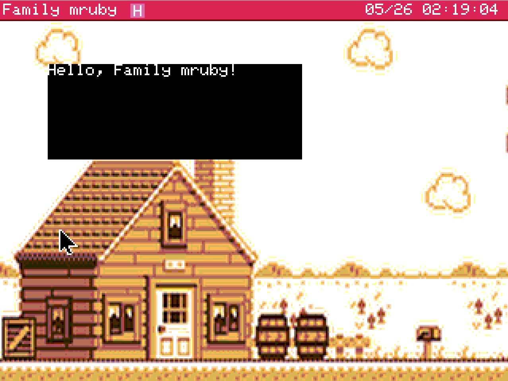
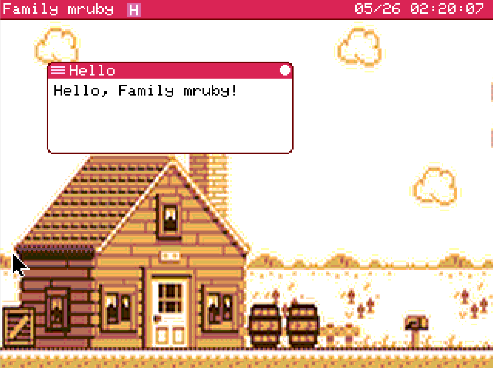

Hello World¶
「Hello, mruby!」と画面に表示する最小の GUI アプリ を動かして、自分のアプリを書く流れを掴みます。
このページは GUI アプリのサンプルです
Family mruby のアプリは大きく分けて、画面に描画する GUI アプリ と、画面を持たない headless アプリ（バックグラウンドで動く処理）があります。このページでは GUI アプリの最小例を扱います。 headless アプリ は、まだサポートしてませんが、Shellアプリからスクリプトとして実行することは可能です。
最小のアプリ構成¶
Family mruby のアプリは 2 つのファイル をペアで作ります。
hello.app.rb # アプリ本体（Ruby）
hello.app.toml # 設定ファイル
両方を /app/<好きなディレクトリ>/ 以下に置き、ランチャーで再スキャン（後述）または再起動するとアイコンが表示されます。
Step 1: 文字を表示するだけの最小アプリ¶
画面上に"Hello, Family mruby!"と描画するだけのアプリを書いてみます。
このサンプルではウィンドウを閉じられません
@gfx.clear は キャンバス全体（タイトルバーを含む）を塗りつぶします。FmrbApp の基底クラスが起動時に描いてくれるタイトルバーと閉じるボタンが上書きされて消えてしまうため、画面上に閉じるボタンが見えなくなります。終了するには、一度リセットしてください。
次のサンプルではWindowの枠の描画も行います。
/app/usr/hello.app.rb を作成して以下のようなコードを実装します。
コードはデフォルトアプリのエディターで実装してもよいですし、Webコンソールを利用してもよいです。コンソールの詳細は コンソール を参照。
/app/usr/hello.app.rb ファイル¶
class HelloApp < FmrbApp
def on_create
@gfx.clear(FmrbGfx::BLACK)
@gfx.draw_text(0, 0, "Hello, Family mruby!", FmrbGfx::WHITE)
@gfx.present
end
end
HelloApp.new.start
コードの説明
| コード | 役割 |
|---|---|
class HelloApp < FmrbApp |
FmrbApp を継承するアプリクラス |
on_create |
起動時に 1 回呼ばれる初期化処理 |
@gfx.clear(...) |
キャンバス全体を黒で塗りつぶし |
@gfx.draw_text(0, 0, ...) |
ウィンドウ左上 (0, 0) に文字を描画 |
@gfx.present |
バッファを画面に反映（必須） |
HelloApp.new.start |
アプリを実行 |
hello.app.toml ファイル¶
同じディレクトリに hello.app.toml を作成:
app_handle_name = "hello"
app_screen_name = "Hello"
default_window_mode = "window"
default_window_width = 160
default_window_height = 60
default_window_pos_x = 30
default_window_pos_y = 40
| キー | 用途 |
|---|---|
app_handle_name |
内部ハンドル名（.rb ファイル名のベースと一致させる） |
app_screen_name |
ランチャーやタイトルバーの表示名 |
default_window_mode |
"window" / "fullwindow" / "fullscreen" |
default_window_width/height |
ウィンドウサイズ (px) |
default_window_pos_x/y |
ウィンドウ左上座標 |
全キーの説明は アプリ設定ファイル (.toml) を参照。
起動して画面に表示する¶
- 実装が完了したら、ランチャーを開いて 右クリック で再スキャン（または基板を再起動）
- タイトルバーが「Rescanning...」になり、1〜2 秒待つと新アプリ「Hello」のアイコンが追加される
- アイコンをダブルクリック（またはマウスでクリック → Enter）
- 画面に「Hello, Family mruby!」と表示されます

Step 2: ウィンドウ枠を表示する¶
Step1では、文字を表示しただけなので、実用的な GUI アプリにするには、以下の点に注意して タイトルバーと閉じるボタンを描画する必要があります。
- ウィンドウ全体ではなく アプリの描画可能領域 (user area) だけ を塗りつぶす（タイトルバーや枠線を消さない）
- 描画後に
draw_window_frameを呼ぶ（基底クラスが用意したタイトルバー描画を再実行）
以下のように、更新してください。
class HelloApp < FmrbApp
def on_create
redraw
end
def redraw
clear_user_area(FmrbGfx::WHITE) # user area を白で塗りつぶし
@gfx.draw_text(@user_area_x0 + 4, @user_area_y0 + 4, "Hello, Family mruby!", FmrbGfx::BLACK)
draw_window_frame # タイトルバー・枠線を再描画
@gfx.present # 画面表示に反映
end
end
HelloApp.new.start
| ポイント | 説明 |
|---|---|
@gfx.clear(FmrbGfx::BLACK) → clear_user_area(FmrbGfx::WHITE) |
タイトルバー以外の領域を指定の色でクリアする |
draw_window_frame の追加 |
基底クラスが用意したフレームを再描画。タイトルバーや、閉じるボタンが描画される |
描画ロジックを redraw に分離 |
後で再描画しやすくするための整理 |
@user_area_* とは
タイトルバーや枠線を除いた アプリが自由に描いてよい領域の座標です。詳細は FmrbApp ▸ 主要インスタンス変数 を参照。
再起動してアプリを実行すると、タイトルバーやウィンドウ枠が描画されて、右上のボタンをクリックしてアプリを終了できるはずです。

起動中アプリを修正してリロードしたい場合¶
コードを書き換えて、起動中のアプリのタイトルバーを 右クリック すると、リロードするボタンが表示されます。 リロードを実行することで、アプリを閉じて開きなおす手間が省けます。
ショートカット: create_app でひな型を生成する¶
毎回 .rb と .toml を手書きするのは面倒です。Family mruby のシェルには create_app コマンドがあり、Step 2 ベースのひな型一式を一発で生成できます。
使い方¶
ランチャーから Shell を起動して、以下を実行:
> create_app my_clock
Created: /app/usr/my_clock.app.rb
Created: /app/usr/my_clock.app.toml
Tip: edit it with `edit /app/usr/my_clock.app.rb`
これで以下のファイルが自動作成されて、ひな形として利用できます。
/app/usr/my_clock.app.rb— Step 2 ベース（clear_user_area+draw_window_frame入り、全on_*ライフサイクルメソッドのひな型あり）/app/usr/my_clock.app.toml— 標準サイズのウィンドウ設定
ランチャーに反映する¶
ランチャーは起動時にアプリ一覧をスキャンして固定するため、ファイルを追加しても自動では出てきません。再スキャンを促すにはランチャーウィンドウ内で右クリックをおこなってください。再起動でも更新されます。
アプリ用ファイルの命名規則¶
create_app コマンドの引数は 小文字英数字とアンダースコア のみ、先頭は英字。例:
| 入力 | 生成されるクラス名 | 表示名 |
|---|---|---|
hello |
HelloApp |
Hello |
my_clock |
MyClockApp |
My Clock |
snake01 |
Snake01App |
Snake01 |
snake_case → CamelCase + App でクラス名、Title Case で表示名 (app_screen_name) が自動生成されます。
配置先¶
ひな型は /app/usr/（自動作成）に置かれます。
テンプレートのカスタマイズ¶
ひな型ファイル本体は /usr/share/template/ に置いてあります:
/usr/share/template/app.rb.template
/usr/share/template/app.toml.template
このファイルを直接編集すると、以後の create_app の出力を自分好みにカスタマイズできます。
| プレースホルダ | 意味 |
|---|---|
{{name}} |
snake_case の名前 |
{{class}} |
CamelCase のクラス名（末尾に App） |
{{title}} |
Title Case の表示名 |
次のステップ¶
- 図形を描いてみる → FmrbGfx
- イベント処理を加える → FmrbApp ▸ イベントハンドリング
- 既存サンプルを読む → サンプル集
トラブル時のチェック¶
ランチャーにアイコンが出ない¶
- ランチャーで 右クリック して再スキャンしたか（→ ランチャーで反映する）
.tomlファイルが.rbと同じディレクトリにあるかapp_screen_nameが.tomlに書かれているかlauncher_visible = falseを指定していないか- ファイルの配置先が
/app/<dir>/以下になっているか
起動するがすぐ閉じる¶
- 例外で落ちている可能性。ログを確認:
Log.infoをon_createに追加して進行を確認
画面に何も出ない¶
@gfx.presentを呼んでいるか確認- 描画座標が
@user_area_x0 / y0 / width / heightの範囲内か確認